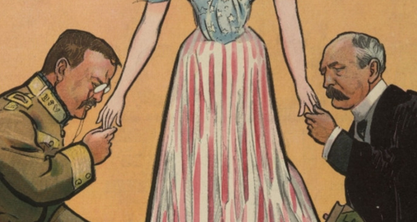

1904—The TCT Mod
by /u/Verbluffen and /u/astrohunch_o
Get the Mod
Available on the mod loader, or through the following codes:
Parker
|
Code 1
|
Code 2
Ending Code
|
Select all and copy within each box containing the code you wish to copy. Then, paste into the corresponding boxes provided in the 'Other' section under the Mod Loader. Alternatively, on the old Campaign Trail site, paste Code 1 first into the Console, then paste Code 2 upon loading the game (note: plenty of functionality will be missing).
Custom TCT code retrieval system 1.0
created by /u/astrohunch_o